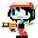

11 |
Armas |
 |
 El Gunsmith te "prestará" su primera arma, la Polar Star. No te preocupes, no se va a molestar demasiado. El Gunsmith te "prestará" su primera arma, la Polar Star. No te preocupes, no se va a molestar demasiado.
* Cada arma tiene un nivel máximo de 3 * La energía de arma se reduce cuando recibes daño * Algunas armas no pueden ser mejoradas por Cristales
La Polar Star es tu primer arma. Su poder inicial es un poco débil, sin embargo, puede ser mejorada más rápidamente que otras armas. A plena potencia (Nivel 3), puede causar mucho daño a los enemigos.

Un regalo de un amigo de Mimiga. La Fireball se te presentará en los primeros pasos de tu búsqueda. A diferencia de la Polar Star, la Fireball es afectada por la gravedad. Sus disparos rebotan y tienen más potencia que la Polar Star. La Fireball es muy útil en terreno montañoso.

Encontrar el Bubbline puede requerir un uso inteligente de algunos materiales gelatinosos en algunos lugares calientes. Los tres niveles del Bubbline son muy diferentes entre sí. El Nivel 2 ofrece tiros más rápidos y en el Nivel 3 la Bubbline puede funcionar como un escudo.

Después de la adquisición de la Machine Gun, no necesitarás mucho más apoyo en tu lucha contra tus enemigos. Como el nombre sugiere, la potente Machine Gun acabará con tus enemigos con una fuerza brutal. Prueba la Machine Gun cuando estés suspendido en el aire y cuando ésta tenga Nivel 3. |
 |
 |
 |